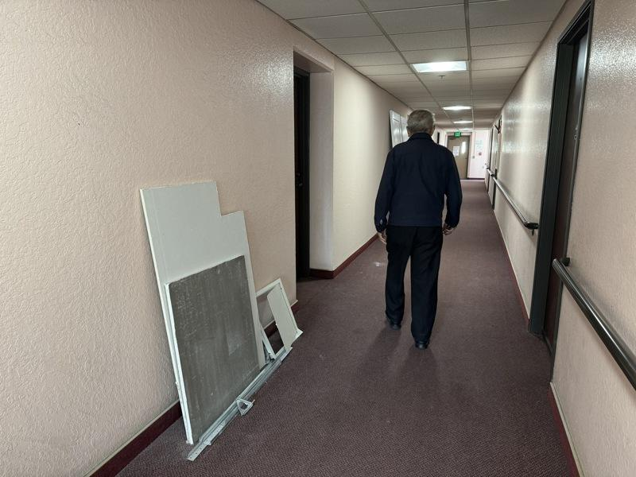
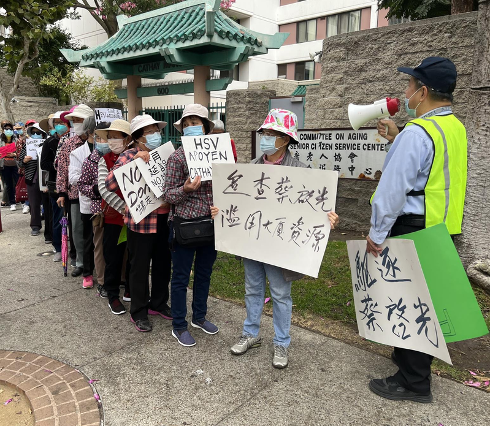
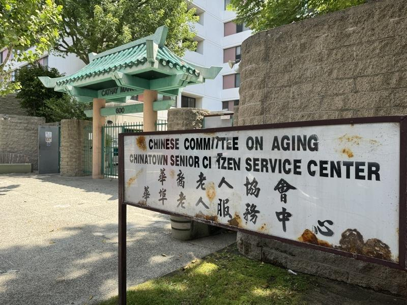
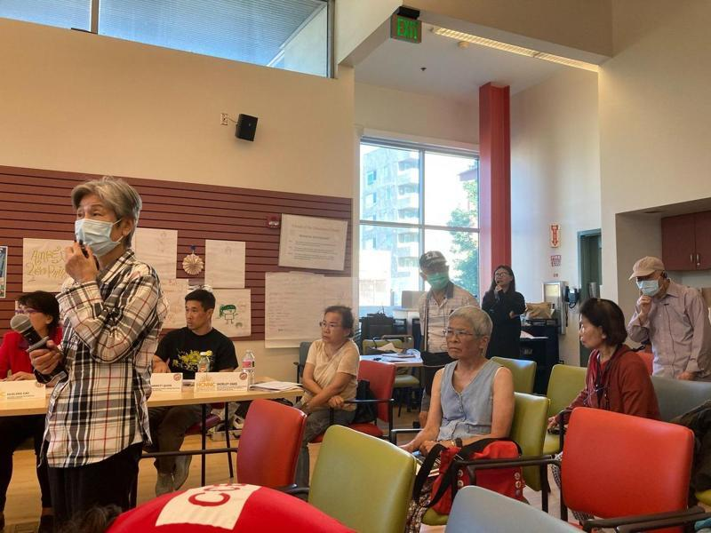
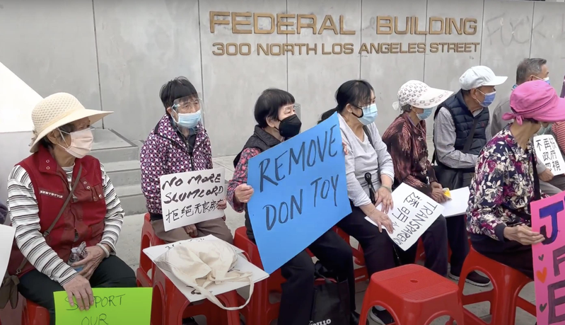

「当情况糟糕到无法忍受的地步，人们就会爆发。」华埠公平发展会(CCED)共同创办人张景雄（King Cheung）说。
「2021年8月17日至9月8日期间，两部电梯停运22天；10月14日至11月6日，又同时停运23天。」这是85岁居民伍惠荣的记录。他在2020年底被诊断出患有胰腺癌，到了2021年下半年，肿瘤增大一倍。
「每次电梯故障，去医院看诊、拿药、购买日常用品都变得非常困难。」伍惠荣记得有一次爬完楼梯后，双腿无力不听使唤，他直接跪在地上。
●10楼上下 要1小时
公寓10楼的一位居民说，电梯停运期间，一些行动不便的老人上下楼就要花费一个小时以上。有些老人因为体力不支，需要腾出双手抓扶楼梯把手才能上楼，他们就用绳子将个人物品和采购回来的蔬菜、生活用品绑在身上，一步步拖上楼。
这样艰难的处境持续了30多年。
●受困电梯 每月都有
6月16日，当本报记者最后一次采访公寓居民时，电梯刚从故障中恢复运行——6名老人被困长达40分钟。居民们说，这样的情况每月都会出现一两次。
伍惠荣是公寓内为数不多的大学生毕业生，也是居民抗议活动的主要发声人。在被确诊患有癌症后，他依然积极参与抗议，直到接受脾脏切除手术后，他才转为幕后工作，主要负责整理数据和撰写文档、发言稿。
「对我来说这是一种责任，但并不是每个人都需要这么做。」他表示，一些居民非常担心遭到管理员的报复而被驱逐。伍惠荣当年排队等了6年，才搬进这栋享受联邦租金补助的老年公寓。
据租房网站Apartments数据，国泰老人公寓附近房源价格高昂，一间Studio的平均月租金就超过2200元，一居室公寓月租金约为2700元。
●拄杖、坐轮椅上街头
而在一次次抗议后，公寓的情况并未如预期改善，张景雄说，「没有成果，让人们感到疲惫。」
CCED试图改变这栋公寓延续几十年的问题。志工们联系了市政府、联邦住房和城市发展部（HUD）、洛县公共卫生局、联邦调查局、警局等。张景雄说，在市政府的一次检查中，公寓被发现存在360处违规，包括蟑螂侵扰、炉灶损坏、管道漏水等问题。
于是，老人们再次回到华埠街头，抗议、游行、发声。2022年10月27日，超过30位80、90岁的居民顶着高温，沿街游行并举办了新闻发布会，地点位于洛杉矶联邦大楼的正门前；他们有人拄着拐杖，随身揣着药瓶，还有人坐在轮椅上呼喊。志工们为这群特殊的抗议者提前准备了座椅和急救医疗用品。
一些居民认为，前任管理者蔡启光（Don Toy）是罪魁祸首，他是华裔老人协会（C.C.O.A. Housing Corporation）的首席执行官，这家非营利机构通过HUD支持性住房计划和联邦补助开发了国泰老人公寓。
●8月12日 洛高院听证
一位曾在社区法律服务机构工作的退休律师Fred Nakamura，在听闻国泰老人公寓的情况后，决定为居民提供法律援助：2021年9月7日，约180名居民对C.C.O.A.提起诉讼，指控其未能履行维护电梯正常运行和公寓其他设施的义务。此外，蔡启光还面临至少两起刑事起诉。
该案的第一次听证会将于今年8月12日在洛杉矶县高等法院举行。
但在过去三年里，该案中一些原告已经去世；就连Nakamura，也在数月前去世。
「这里的居民或去世或搬走，新的居民不断搬进来，关于这栋公寓的记忆一直在更新，但问题依旧存在。」张景雄这样说道。
国泰老人公寓的持续抗议和恶劣的居住条件引起了当地官员关注。两年多前，洛市检察长Mike Feuer对前任管理方提出16项控诉，指其未能履行电梯和其他公寓设施的维运责任。
自从2021年11月以来，联邦众议员Jimmy Gomez也一直在帮助居民，敦促HUD采取行动解决公寓的问题。2022年，居民当面向正在竞选的洛杉矶市长贝斯（Karen Bass）提出诉求。
一些居民也自今年起开始参加每月举办的居民会议，共同讨论解决居住条件问题的方案，包括电梯和其他问题。
●业主换人 盼见曙光
与此同时，居民们似乎看到了一线曙光——国泰老人公寓去年以9700万元出售。据CoStar报导，新业主是私有业主Capital Realty Group，他们在27个州经营约1万7130间可负担住房单元。居民们希望新业主能够带来更专业的管理。
公寓目前正在进行全方位的翻修，包括新的橱柜、家电和卫浴设施。部分居民已经搬进新房间。不过，一些居民也指出了新问题，例如卧室内原有的警报按钮被移除、不方便使用的新卫浴设施等。
然而，这栋公寓的电梯仍然常出现故障，年长居民们依然面临着被困在公寓内的问题。
「这里如果不够好，你随时可以搬走。」 吴女士曾获得这样的回应。而她说，「我没有能力买房，要怪只能怪我自己。」



